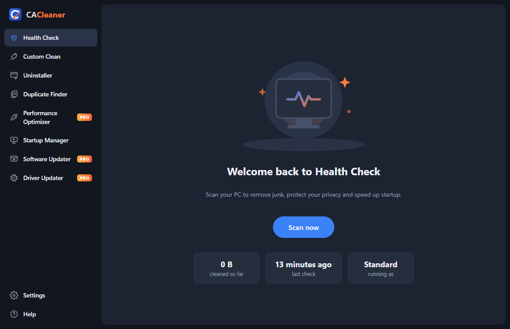
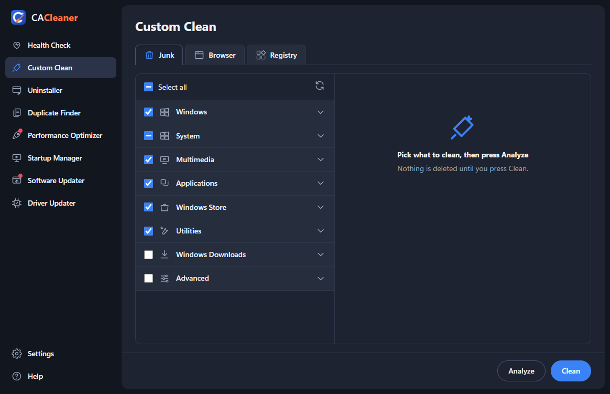

A cleaner, faster PC
in one click
CACleaner clears out junk files, protects your privacy, tidies what starts with Windows and keeps your apps up to date. Simple, safe, and much cheaper than the big names.

Everything your PC needs
The everyday tools are free forever. Pro adds the extras that keep your PC in top shape automatically.
Health Check
One scan finds browser leftovers, junk files and things slowing your PC down, and fixes them step by step.
Custom Clean
Pick exactly what to clean: Windows temp files, caches, the Recycle Bin, app caches and more.
Browser privacy
Clear history, cache and (if you choose) cookies in Chrome, Edge, Firefox, Brave and Opera.
Uninstaller
See every program with its size and install date, and remove the ones you don't use.
Duplicate Finder
Finds exact copies of files byte for byte. Removed copies go to the Recycle Bin.
Startup Manager
Turn off apps that start with Windows so your PC boots faster. Every change can be undone.
Registry cleanerPRO
Removes leftovers pointing at deleted programs, with a backup saved before every fix.
Performance OptimizerPRO
See which apps use the most memory and close the ones you don't need.
Software UpdaterPRO
Finds outdated apps and updates them all in one go.
Driver UpdaterPRO
Shows driver updates Windows Update has for your hardware.
Scheduled cleaningPRO
CACleaner cleans quietly on the schedule you choose, without you lifting a finger.
Automatic updates
CACleaner keeps itself up to date, so you always have the newest version.
Safe by design
Cleaning should never break anything. CACleaner is careful by default.
- Nothing is deleted until you press Clean, and files in use are skipped.
- Temporary files from the last 24 hours are left alone.
- Cookies are off by default, so you don't get signed out of websites.
- Duplicates and old downloads go to the Recycle Bin, not straight to deletion.
- Every registry fix is backed up first and can be undone with a double-click.
- No adverts, no tracking, nothing about your files leaves your PC.

Simple pricing
Start free. Upgrade when you want the extras.
CACleaner Free
- Health Check
- Custom Clean (junk and browsers)
- Uninstaller
- Duplicate Finder
- Startup Manager
- Registry cleaner
- Performance Optimizer
- Software and Driver Updater
- Scheduled cleaning
CACleaner Pro
- Everything in Free
- Registry cleaner with backups
- Performance Optimizer
- Software Updater
- Driver Updater
- Scheduled automatic cleaning
- 14-day money-back guarantee
Your subscription renews each year until you cancel. You can cancel any time. Orders are processed by our reseller Lemon Squeezy, who handle payment and tax.
Questions
How do I unlock Pro after buying?
You'll get a license key by email. Open CACleaner, go to Settings → My Subscription, paste the key and press Activate.
Can I use Pro on more than one PC?
Each key works on one PC. You can move it: press "Remove from this PC" on the old one and activate it on the new one.
How do I cancel?
Use the link in your purchase email, or email us. Pro keeps working until the end of the year you've paid for.
Will cleaning delete my files?
No. CACleaner only cleans temporary files, caches and the other things you tick. Your documents, photos and music are never touched by Custom Clean.
Windows says "Windows protected your PC". Is it safe?
That message appears for apps from new publishers. Click "More info", then "Run anyway".
Which Windows versions are supported?
Windows 10 and Windows 11, 64-bit.